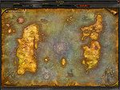

De: La Frikipedia, la enciclopedia extremadamente seria.
De: La Frikipedia, la enciclopedia extremadamente seria. De: La Frikipedia, la enciclopedia extremadamente seria.
| De la serie Países del planeta tierra: | |||||
| Chicken island | |||||
|---|---|---|---|---|---|
| |||||
| Lema: Todos somos pollos | |||||
| Himno: El poder del pollo
| |||||
| 
| |||||
| Capital | Polliland | ||||
| Mayor ciudad | Metropollis | ||||
| Lenguas oficiales | el gallinero | ||||
| Gobierno | comunista liberal | ||||
| el Mandamas | El | ||||
| Área | por donde esta hawai | ||||
| Población | 300,1 habitantes | ||||
| Moneda | el chicken little | ||||
| Zona horaria | 32 n | ||||
| Dominio Internet | tienen en su poder la mitad de las webs | ||||
| Código telefónico | 122+93
| ||||
| El mejor lugar para vivir con pollos | |||||
Chicken Island es la Isla de los Pollos.
Chicken island fue de siempre una isla donde los habitantes comvivian en paz y harmonia.De sistema agricola y tranquilo chicken island esta habitado enteramente por pollos de origen humilde ya que sus origenes son de pollos que emigraron a la isla por la esclavitud de un despiadado magnate,el coronel kentucky.Exportan alimento a los paises superdesarollados acambio de alpiste y dinero.Su gobierno esta formado por el gran lider llamado "el gallo" que se dice que es un corrupto que todavia trafica con pollos para el coronel kentucky.Sus habitantes han dado a estrellas y personajes famosos como:
Y unos cuantos mas que no me da la gana decir.
Dato:Durante los ultimos años las empresas y los grandes negocios han prosperando considerablemente haciendo de la isla un pais standart.
Se cuenta que gallos le llamaban "el culo". En este lugar Cristobal el Culón inventa el detergente, y regresa a Virreinato del Gallinero.
Al igual que todos los paises del mundo, el Virreinato del Gallinero, ahora las Provincias Unidas del Gallinero, no se salvó de la Segunda Guerra Mundial. Adolf Hitler invadió el territorio y declara que la única raza superior a los blancos son los gallos.
Ahí Hitler crea una casa de veraneo, que luego serviría como casa de gobierno para Isla Chiken. Donde se instalan los miembros de la Casa del Gallo, una casa de comunistas que se exiliaron a la Isla, pues pensaron que la Gran Pollo, que es elegido como Mandamás y Gallo de la Isla.
Y como no se salva de la Segunda Guerra, ¿como se va a salvar de los Kentucky. Quien se nombra gobernador y comienza a llevar a los gallos a campos de consentración donde son convertidos en lo que nosotros llamamos "la competencia de McDonald's".
En 2009 los pollos, bajo el liderazgo de Ganzogrande, echan al coronel y reclaman la isla para sí, se unen a la ONU y se dan cuenta de que la independencia solo sirve para entrar en la competencia por un lugar para ser explotados. El [[Pato DOnald lleva acabo su campaña en la Isla, y la vuelve comunista.
Los chickenianos tiene una gran creencia al todopoderosso dios chicken que segun ellos hizo su isla.Su doctrina les obliga a comer 15 kilos de alipeste al dia, ir a misa del gallo ver la 2 y follar mucho.
En chicken island hay varios distritos y lugares historicos (todos ellos recogidos en "la gran guia del guiri de chicken island" toma publicidad )
Autor(es):